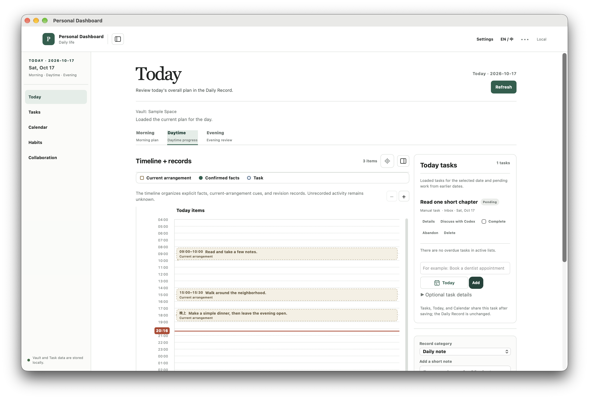
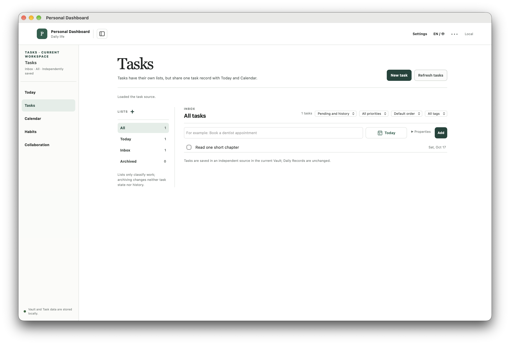
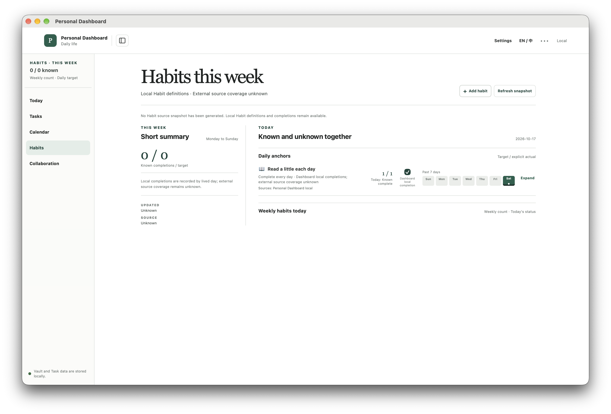

MAC · LOCAL FIRST · 1.0.0 BETA 1
受邀 Beta · 候选预览Invited beta · Candidate preview把今天，
慢慢理清。A little space
for your day.
任务、每日安排和习惯，在一个安静的 Mac 工作台里。先从你自己的本地记录开始，需要时再和 AI 一起想。Tasks, daily plans and Habits in one calm Mac workspace. Start with your own local records, then bring in AI when you want a hand.
Apple Silicon Mac · 本地功能无需 AI 账号 · 不要求 ObsidianApple Silicon Mac · Local features need no AI account · No Obsidian required

从小事开始START SMALL
让记录跟着生活走。Keep the record close to life.
不必先整理一整套个人知识库。新建空白个人空间，放进第一件要做的事，再留下一句今天。You do not need a complete personal knowledge system. Create an empty personal space, add one action, and leave a short note about today.
一件事，
不用记三遍。One action.
One shared record.
Tasks、Today 和 Calendar 读取同一个任务。给它安排日期、加上子任务，或先留在收集箱；完成和放弃各有自己的记录。Tasks, Today and Calendar read the same Task. Give it a date, add subtasks, or leave it in Inbox. Completion and abandonment retain their own meaning.
了解任务与日历Tasks and Calendar in the manual →
看见积累，
也保留未知。Notice the pattern.
Leave room for unknowns.
建立本地习惯，按生活日记录完成。每周目标计算不同的达标日；未知的历史不会自动算作失败。Create local Habits and record completion by lived day. Weekly targets count distinct attained days. Unknown history does not automatically become failure.
读懂目标与证据Understand goals and evidence →
03 / COLLABORATION
需要时，
一起想下一步。When you need it,
think through the next step.
用自己的 ChatGPT 连接 Codex，讨论安排、请求保存改变，再回到资料中核对结果。听写先变成可编辑草稿，由你发送。Connect Codex with your own ChatGPT account, discuss a plan, request a change, then check the result in your records. Dictation becomes an editable draft that you send yourself.
AI 是可选的在线能力。Codex 需要自行安装，不随 DMG 附带。自动早间安排默认关闭，只在 App 运行期间检查。AI is optional and online. Install Codex separately; it is not bundled in the DMG. Automatic morning planning defaults off and checks only while the app runs.
查看 AI 准备条件与未完成验收AI setup and validation limits →下载之前BEFORE YOU INSTALL
先看清条件。Know what this beta needs.
先邀请少量 Mac 用户试用。实际检查和未执行项目分别列明，便于你决定是否适合现在尝试。A first beta for a small invited group. Checked behavior and unperformed tests are listed separately so you can decide whether to try it now.
- Mac
- Apple Silicon / M 系列。Intel 不在首轮范围。Apple Silicon / M-series. Intel is outside this beta.
- macOS
- 已测 27.0.1；较低系统未验证。包内 12.0 是最低元数据，不能当作支持声明。Tested on 27.0.1; lower versions are unvalidated. The 12.0 package minimum is metadata, not a support promise.
- 本地功能Local use
- 无需 AI、滴答、Obsidian 或开发工具。No AI, Dida, Obsidian or developer tools required.
- 可选 AIOptional AI
- 外部 Codex 0.160.0、自有 ChatGPT、网络及可用权限/额度。真实模型与麦克风本轮尚未完成验收。External Codex 0.160.0, your own ChatGPT, network and permissions/quota. Real-model and microphone acceptance remain unperformed this run.
1.0.0 Beta 1 · BUILD 5.0.4
最终候选准备中，
下载等确认。Final candidate in preparation.
Downloads await approval.
网页和包正在一起评审。当前没有公开下载链接；获得发布确认后，才会开放明确版本的 DMG 与校验和。The website and package are being reviewed together. There is no public download link yet. The exact-version DMG and checksum will open only after publication approval.
本地 ad-hoc 签名 · 未公证 · 不提供自动更新Local ad-hoc signature · Not notarized · No automatic updater
候选字节、版本与发行说明Candidate bytes, version and release notes →开始与反馈START & SHARE FEEDBACK
第一次使用，四步就好。Four first steps.
- 复制并推出Copy, then eject
拖入应用程序，推出 DMG 后再打开。Drag into Applications, eject the DMG, then launch.
- 新建个人空间Create your space
选位置、命名新文件夹，得到空白资料。Choose a location and new folder name for empty data.
- 做三个小操作Try three small actions
一个任务、一个习惯，再写一句今天。One Task, one Habit and a short note about today.
- 退出后再读回Quit and read it back
核对持久保存，按需准备可选 AI。Check persistence, then prepare optional AI if needed.